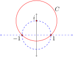
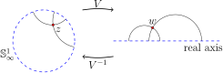
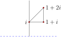

The Poincaré disk model is one way to represent hyperbolic geometry, and for most purposes it serves us very well. However, another model, called the upper half-plane model, makes some computations easier, including the calculation of the area of a triangle.
Definition5.5.1
The upper half-plane model of hyperbolic geometry has space \(\mathbb{U}\) consisting of all complex numbers \(z\) such that Im(\(z)
> 0\text{,}\) and transformation group \(\cal U\) consisting of all Möbius transformations that send \(\mathbb{U}\) to itself. The space \(\mathbb{U}\) is called the upper half-plane of \(\mathbb{C}\text{.}\)
The Poincaré disk model of hyperbolic geometry may be transferred to the upper half-plane model via a Möbius transformation built from two inversions as follows:
Invert about the circle \(C\) centered at \(i\) passing through -1 and 1 as in Figure 5.5.2.
Reflect about the real axis.

Figure5.5.2 Inversion in \(C\) maps the unit disk to the upper-half plane.
Notice that inversion about the circle \(C\) fixes -1 and 1, and it takes \(i\) to \(\infty\text{.}\) Since reflection across the real axis leaves these image points fixed, the composition of the two inversions is a Möbius transformation that takes the unit circle to the real axis. The map also sends the interior of the disk into the upper half plane. Notice further that the Möbius transformation takes \(\infty\) to \(-i\text{;}\) therefore, by Theorem 3.5.8, the map can be written as
This Möbius transformation is the key to transferring the disk model of the hyperbolic plane to the upper half-plane model. In fact, when treading back and forth between these models it is convenient to adopt the following convention for this section: Let \(z\) denote a point in \(\mathbb{D}\text{,}\) and \(w\) denote a point in the upper half-plane \(\mathbb{U}\text{,}\) as in Figure 5.5.3. We record the transformations linking the spaces below.
Going between \((\mathbb{D},{\cal H})\) and \((\mathbb{U},{\cal U})\)
The Möbius transformation \(V\) mapping \(\mathbb{D}\) to \(\mathbb{U}\text{,}\) and its inverse \(V^{-1}\text{,}\) are given by:
Some features of the upper half-plane model immediately come to light. Since \(V\) is a Möbius transformation, it preserves clines and angles. This means that the ideal points in the disk model, namely the points on the circle at infinity, \(\mathbb{S}^1_\infty\text{,}\) have moved to the real axis and that hyperbolic lines in the disk model have become clines that intersect the real axis at right angles.

Figure5.5.3 Mapping the disk to the upper half-plane.
Define the hyperbolic distance between two points \(w_1, w_2\) in the upper half-plane model, denoted \(d_U(w_1, w_2)\text{,}\) to be the hyperbolic distance between their pre-images in the disk model.
Suppose \(w_1\) and \(w_2\) are two points in \(V\) whose pre-images in the unit disk are \(z_1\) and \(z_2\text{,}\) respectively. Then,
where \(u\) and \(v\) are the ideal points of the hyperbolic line through \(z_1\) and \(z_2\text{.}\) But, since the cross ratio is preserved under Möbius transformations,
where \(p,q\) are the ideal points of the hyperbolic line in the upper half-plane through \(w_1\) and \(w_2\text{.}\) In particular, going from \(w_1\) to \(w_2\) we're heading toward ideal point \(p\text{.}\)
Example5.5.4The distance between \(ri\) and \(si\)
For \(r > s > 0\) we compute the distance between \(ri\) and \(si\) in the upper half-plane model.
The hyperbolic line through \(ri\) and \(si\) is the positive imaginary axis, having ideal points \(0\) and \(\infty\text{.}\) Thus,
To find the distance between any two points \(w_1\) and \(w_2\) in \(\mathbb{U}\text{,}\) we first build a map in the upper half-plane model that moves these two points to the positive imaginary axis. To build this map, we work through the Poincaré disk model.
By the transformation \(V^{-1}\) we send \(w_1\) and \(w_2\) back to \(\mathbb{D}\text{.}\) We let \(z_1 = V^{-1}(w_1)\) and \(z_2 = V^{-1}(w_2)\text{.}\) Then, let \(S(z) = e^{i\theta}\frac{z-z_1}{1-\overline{z_1}z}\) be the transformation in \((\mathbb{D},{\cal H})\) that sends \(z_1\) to 0 with \(\theta\) chosen carefully so that \(z_2\) gets sent to the positive imaginary axis. In fact, \(z_2\) gets sent to the point \(ki\) where \(k = |S(z_2)| = |S(V^{-1}(w_2))|\) (and \(0 \lt k \lt 1\)). Then, applying \(V\) to the situation, \(0\) gets sent to \(i\) and \(ki\) gets sent to \(\frac{1+k}{1-k}i\text{.}\) Thus, \(V \circ S \circ V^{-1}\) sends \(w_1\) to \(i\) and \(w_2\) to \(\frac{1+k}{1-k}i\text{,}\) where by the previous example the distance between the points is known:
Describing \(k\) in terms of \(w_1\) and \(w_2\) is left for the adventurous reader. We do not need to pursue that here.
We now derive the hyperbolic arc-length differential for the upper half-plane model working once again through the disk model. Recall the arc-length differential in the disk model is
Since \(z = V^{-1}(w) = \frac{iw+1}{w+i}\) we may work out the arc-length differential in terms of \(dw\text{.}\) We will need to take the derivative of a complex expression, which can be done just as if it were a real valued expression. Here we go:
The length of a smooth curve \(\boldsymbol{r}(t)\) for \(a \leq t \leq b\) in the upper half-plane model \((\mathbb{U},{\cal U})\text{,}\) denoted \({\cal L}(\boldsymbol{r})\text{,}\) is given by
To find the length of the horizontal curve \(\boldsymbol{r}(t) = t + ki\) for \(a \leq t \leq b\text{,}\) note that \(\boldsymbol{r}^\prime(t) = 1\) and \(\text{
Im}(\boldsymbol{r}(t)) = k\text{.}\) Thus,
From the arc-length differential \(ds = \frac{dw}{\text{Im}(w)}\) comes the area differential:
Definition5.5.8
In the upper half-plane model \((\mathbb{U},{\cal U})\) of hyperbolic geometry, the area of a region \(R\) described in cartesian coordinates, denoted \(A(R)\text{,}\) is given by
With the trig substituion \(\cos(\theta) = x\text{,}\) so that \(\sqrt{1-x^2} = \sin(\theta)\) and \(-\sin(\theta)d\theta = dx\text{,}\) the integral becomes
It turns out that any \(\frac{2}{3}\)-ideal triangle is congruent to one of the form \(1w\infty\) where \(w\) is on the upper half of the unit circle (Exercise 5.5.3), and since our transformations preserve angles and area, we have proved the area formula for a \(\frac{2}{3}\)-ideal triangle.
Theorem5.5.10
The area of a \(\frac{2}{3}\)-ideal triangle having interior angle \(\alpha\) is equal to \(\pi -
\alpha\text{.}\)
What becomes of horocycles when we transfer the disk model of hyperbolic geometry to the upper half-plane model?
2
What do hyperbolic rotations in the disk model look like over in the upper half-plane model? What about hyperbolic translations?
3
Give an explicit description of a transformation that takes an arbitrary \(\frac{2}{3}\)-ideal triangle in the upper half-plane to one with ideal points 1 and \(\infty\) and an interior vertex on the upper half of the unit circle.
4
Determine the area of the “triangular” region pictured below. What is the image of this triangle under \(V^{-1}\) in the disk model of hyperbolic geometry? Why doesn't this result contradict Theorem 5.4.9?

5
Another type of block. Consider the four-sided figure \(pqst\) in \((\mathbb{D},{\cal H})\) shown in the following diagram. This figure is determined by two horocycles \(C_1\) and \(C_2\text{,}\) and two hyperbolic lines \(L_1\) and \(L_2\) all sharing the same ideal point. Note that the lines are orthogonal to the horocycles, so that each angle in the four-sided figure is 90\(^\circ\text{.}\)
a. By rotation about the origin if necessary, assume the common ideal point is \(i\) and use the map \(V\) to transfer the figure to the upper half-plane. What does the transferred figure look like in \(\mathbb{U}\text{?}\) Answer parts (b)-(d) by using this transferred version of the figure.
b. Prove that the hyperbolic lengths of sides \(pq\) and \(st\) are equal.
c. Let \(c\) equal the hyperbolic length of the leg \(pt\) along the larger radius horocycle \(C_1\text{,}\) and let \(d\) equal the hyperbolic length of the leg \(sq\) on \(C_2\text{.}\) Show that \(c = e^x d\) where \(x\) is the common length found in part (b).
d. Prove that the area of the four-sided figure is \(c - d\text{.}\)